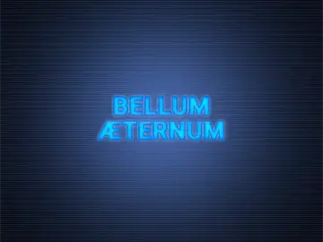

Red Alert 2 is a beloved real-time strategy game known for its over-the-top units and "what if" alternate history battles. The Bellum Æternum mod takes this concept further by introducing a fascinating blend of authentic and inspired military vehicles. This deep dive explores some of the notable real and semi-real weapons featured in the mod, focusing on their real-world origins and how they resonate with history buffs and gamers alike.
Real-World Tanks and Artillery in Bellum Æternum
1. M46 Patton
- Background: Developed in the late 1940s, the M46 Patton was an American main battle tank designed to replace the M26 Pershing and M4 Sherman. It saw combat during the Korean War and was noted for its improved firepower and mobility. 
- In-Game Role: In Bellum Æternum, the M46 Patton serves as the strongest battle tank in Europe. However, in 1950s to 1960s, the M46 Patton is an outdated tank, its 90mm M3A1 gun cannot effectively penetrate the new Soviet tanks, and it has been replaced by new tanks right after the Soviet invation.
2. M4A3 Sherman
- Background: Arguably the most iconic American tank of World War II, the M4 Sherman was produced in massive numbers and saw action across every Allied front. The M4A3 introduced a more powerful engine and was favored for its reliability and ease of production.
- In-Game Role: The Sherman in Bellum Æternum appears in the campaign mission. When Soviet invasion begins, the some Allied forces are still operating the old World War II Serman tank, and this leads the fall of Brussels.
3. FV4007 Centurion Mk.7
- Background: The Centurion is considered one of the greatest post-WWII tank designs. The Mk.7 variant of the FV4007 brought enhanced armor, firepower, and versatility, serving with the British Army and allied forces for decades.
- In-Game Role: True to its reputation, the Centurion in the mod is a backbone unit when defending the Great Britain. It has decent armor, penetration and rate of fire.
Semi-Real and Inspired Armored Units
1. Black Prince AVRE (Engineered from A43 Black Prince)
- Background: The real Black Prince was an experimental British tank—essentially a widened and improved Churchill designed for heavier armament. The AVRE (Armoured Vehicle Royal Engineers) adaptation never entered full production, but "what if" scenarios abound among enthusiasts.
- In-Game Role: Bellum Æternum leverages this concept, fielding the Black Prince AVRE as a heavy-duty specialist for engineering roles, like demolishing fortifications and build structures.
2. BTR-152Z Flak Track (Based on BTR-152 APC)
- Background: The BTR-152 was a Soviet armored personnel carrier introduced after World War II. While it was adapted for multiple roles, including anti-air configurations, the “152Z Flak Track” is a creative extrapolation inspired by potential upgrades.
- In-Game Role: In the mod, this variant acts as an anti-aircraft platform, providing mobile air defense to front-line troops—a logical extension of its design.
3. M54A2 Grizzly Tank (Based on M48 Patton)
- Background: While the M54A2 does not exist in real military nomenclature, it’s presented in the mod as a developmentally advanced cousin to the M48 Patton—a real Cold War American tank famed for its robust design and service life.
- In-Game Role: This semi-real Grizzly Tank is the Allied main battle tank, offers improved firepower and defense.
4. Katyusha Rocket Artillery (Based on ZIS-151)
- Background: The famous Katyusha multiple rocket launcher, often mounted on trucks, became an iconic Soviet weapon in World War II. Post-war, the system was frequently mounted on the ZIS-151 truck chassis, capable of saturating battlefields with explosive firepower.
- In-Game Role: Bellum Æternum brings this classic system to life, delivering devastating area-of-effect barrages in keeping with its real-world destructive reputation.
5. KV-550 Apocalypse Tank (Based on KV-5)
- Background: The KV-5 was a prototype Soviet super-heavy tank that reached only the blueprint stage — a behemoth with immense armor and a powerful main gun.
- In-Game Role: The mod’s Apocalypse Tank pays homage to the original concept. While keeping the heavy armour of the KV-5, it has armed with stunding twin-barrel 122mm high velocity cannon, exaggerating its firepower to create a true battlefield monster, and maintaining the spirit of Red Alert's mix of realism and fantasy.
Why Bellum Æternum Resonates With Fans
By including both authentic and creatively imagined vehicles, Bellum Æternum appeals to players who appreciate military history as well as those who love the game’s signature alternate-reality flair. Whether you recognize the outline of a Centurion or marvel at the what-could-have-been prowess of an Apocalypse Tank, this mod offers both historical immersion and thrilling gameplay, uniting the best of both worlds for Red Alert 2 fans.